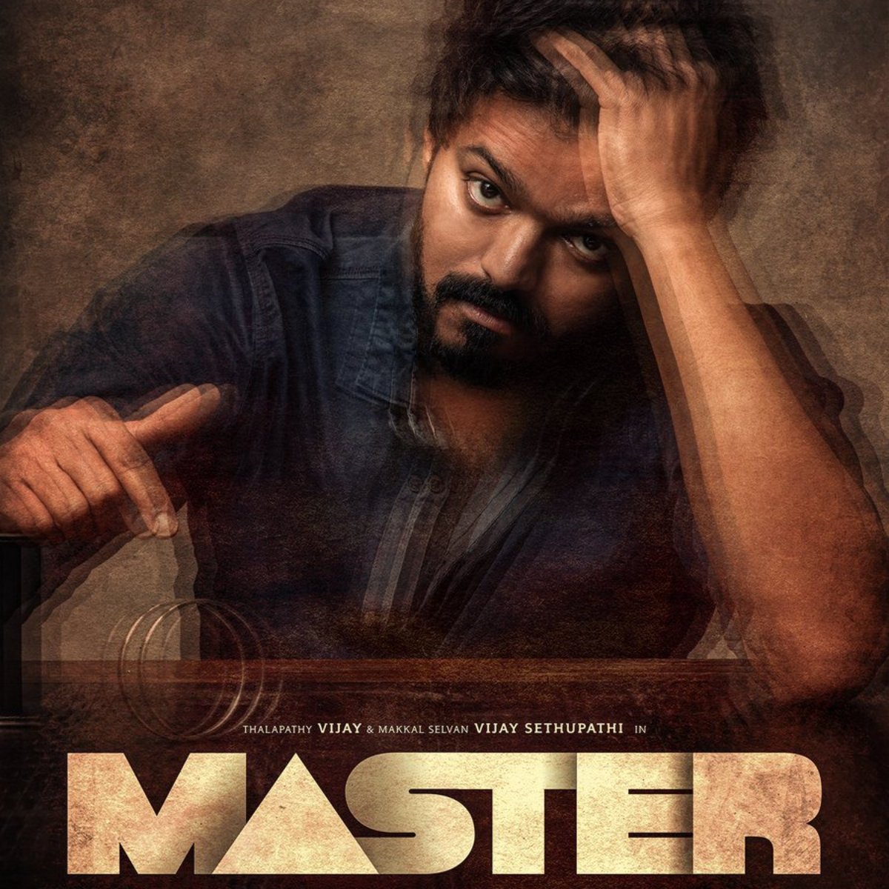
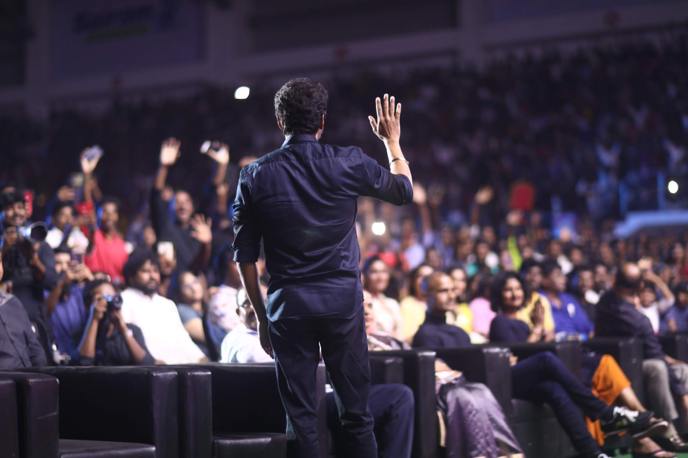

MASTER
Joseph Vijay Chandrashekar
Master is an upcoming Indian Tamil-language action-thriller film written and directed by Lokesh Kanagaraj, and produced by Xavier Britto, under the banner XB Film Creators. The film stars Vijay and Vijay Sethupathi in the leading roles whilst Malavika Mohanan, Arjun Das, Andrea Jeremiah and Shanthanu Bhagyaraj play supporting roles. The music for the film is composed by Anirudh Ravichander, whilst cinematography and editing are handled by Sathyan Sooryan and Philomin Raj, respectively. The film will be released in Tamil, Telugu, Hindi, Kannada, and Malayalam languages. The film was initially scheduled to release theatrically on 9 April 2020, but indefinitely got postponed due to the COVID-19 pandemic.
